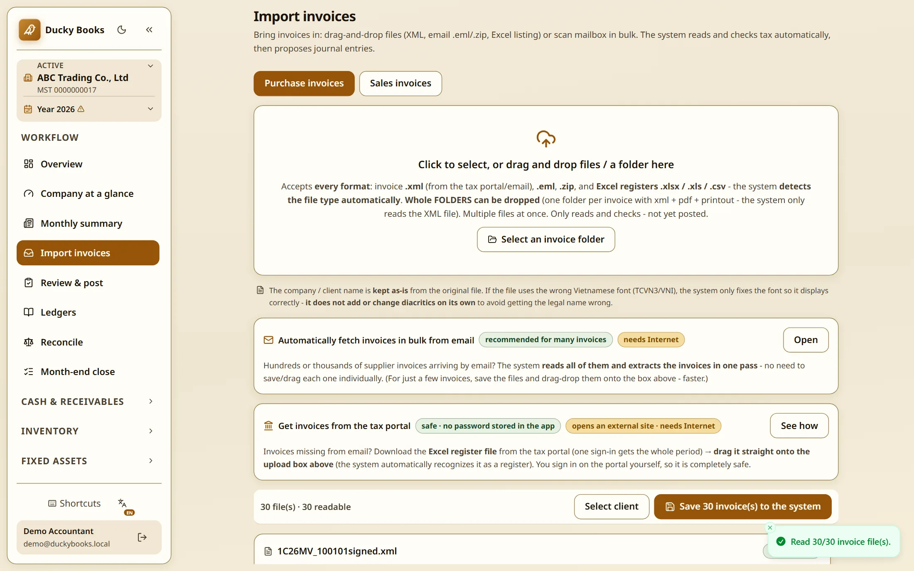
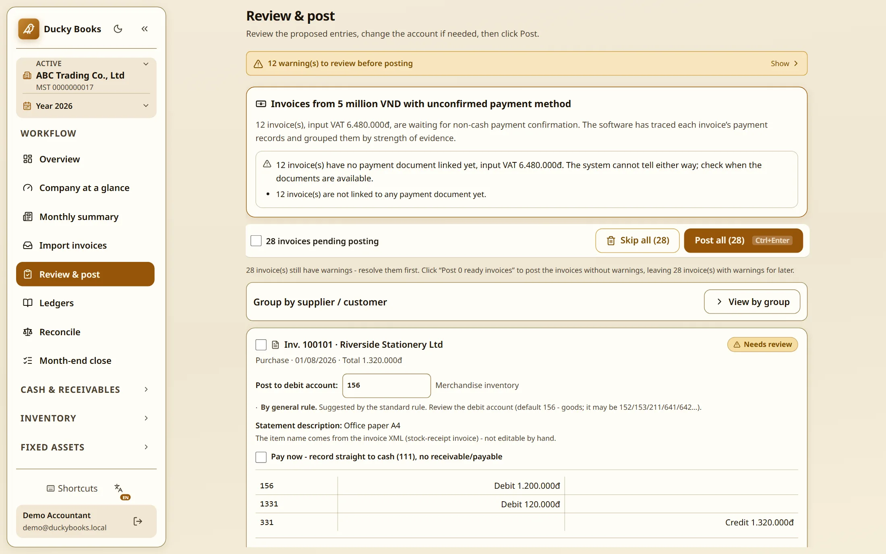
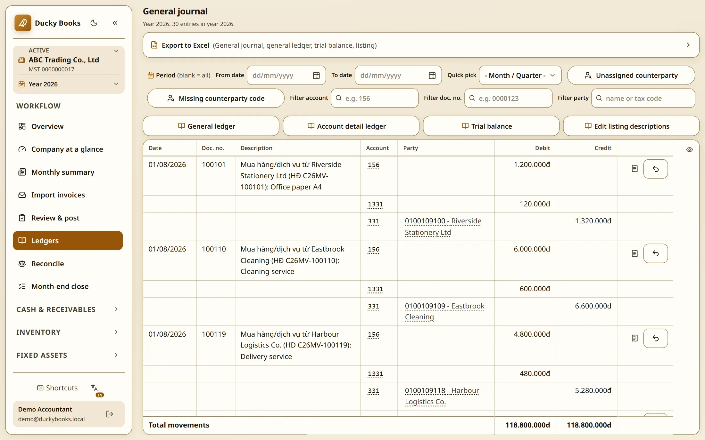
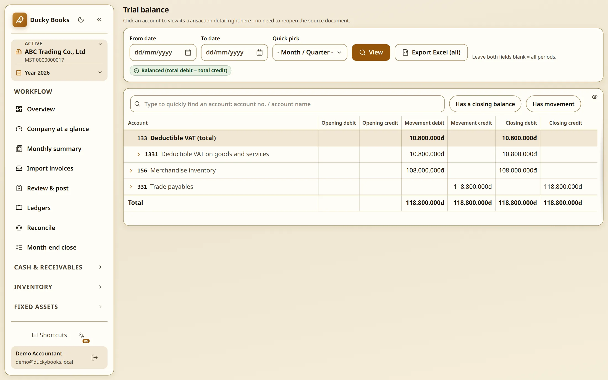

Dinh Duc Le
Business Analyst · Data Analyst
The detail
The working behind the three figures on the front page, nothing new. Read it to check something, not from beginning to end.
Three other companies have bought this software under signed contracts, with me named as the supplier. They came through my mother: she introduced them, showed them the software, and set up each company so they could watch their own books run before deciding. Not strangers who found me, and I will not call them that.
What it is evidence of is narrower, and I think still worth something: a working chief accountant put her professional name behind this software with her own contacts, and three businesses signed and paid after seeing it run on their own data. It is not evidence of an arm’s-length decision by people with no connection to me. I do not have that yet, and I would rather say so than let the word customer do work it has not earned.
This is not a side business that would compete with a job. I do not sell it, am not looking for more customers, and have turned down the work that would come with them. I would tell you on day one.
Her accounting practice in Vietnam keeps the books for 43 client businesses. Every sale, purchase and bank statement line has to be recorded and checked, and the totals go to the tax office on a return.
For years that meant opening invoices and typing what was on them. One number wrong and a real business gets the wrong tax bill. In Vietnam the chief accountant signs the accounts by name and answers for them.
So I built software to do the reading. It went live on 29 May 2026, the day after I started; everything since was written while the practice already relied on it. There was never a safe empty version to get wrong. She corrected me throughout. She is the qualified accountant here. I am not.
The typing
Every invoice a business receives has to end up in the books: who from, what for, how much, how much of that was tax. Of the 42,655 invoices now in these books, 93 were typed by hand.
The other 42,562 arrived as files: 32,158 as electronic invoice files from the supplier, 10,404 pulled from its online list. Two routes, neither typed.
The measurements
Three jobs, three totals, not meant to add up: 70,320 journal entries came from 42,655 invoices, 1.65 each; a bank statement line is a third thing again. Each row says what it is a share of, including the weak one.
Counted on the working system on 5 September 2026. Higher means less typing for a person.
The log records which action came from which press. Two buttons count different things. Saving invoices: 251 presses took in 4,413 invoices, 17.6 each; the biggest single press took 104 invoices and finished inside the same second. That 251 is not every press ever made: it covers only the period since the log recorded which rows came from which press, 4,484 of the 32,356 saving actions. Posting into the books is a separate button, counted below.
I asked her four questions in writing on 4 September 2026 and left the answers as they came back. Translated from Vietnamese, cut only for length.
She is my mother, so take this as an expert user talking, not as a reference. A reference has to be someone with no reason to be kind to me. Seven other people at the firm use it; ask and I will arrange one of them instead.
My mother, the chief accountant, on what the software gives herWhen it reads the invoices correctly I stop worrying about the company name, the tax number, the goods amount, the tax amount. Receivables and payables come out right and are easy to reconcile. The time saved on typing means I can take on more companies, and get to the other work.
The chief accountant, asked which job still takes the most timeChoosing the account for each entry.
That is the 32.3% figure above, named by the person it costs.
The chief accountant, on what she still checks by handEvery company posts things differently, so I still open each invoice and read through them once. If they are right, posting the batch is very quick. The bank statement is the same. I read the payment description to see whether the software picked the right party. Then I am at ease, and I only do it once. If I posted the whole batch on its suggestion and one was wrong, redoing it would cost a lot of time.
Ten times the companies. More hours in total.
Both charts share the same weeks. Top: companies with books on the system, counted from the start, 4 in the first full week, 13 by the end of June, 42 by the end of August. Bottom: hours the three regular users spent on each company that week. Counted on the working system on 5 September 2026.
Swipe the chart sideways to see all of it.
In mid June the team put about 4.5 hours a week into each company. By the end of August, 42 companies were on the system at under an hour a week each. (The 43 quoted elsewhere is today’s count, four days later.) Weekly hours for everyone went from 8 in the first week of June to 71 in the busiest week of August. These two lines count different people and do not add up: the per-company figure is the three regular users only, the 8-to-71 is all nine. 42 companies at under an hour each is about 29 hours, not 71. Two separate measurements, not two views of one number.
Two things this does not say. The same three people did the regular work throughout, so the extra companies came without hiring. And a company takes most of its hours in its first weeks, when its old books are loaded in, so a settled company is always cheaper than a new one.
Invoices can be saved one at a time or a whole batch at once. Both work. On that posting button the log shows the batch way used on 22 presses out of 7,967. Everything else went one at a time, even though one batch press once wrote 101 journal entries. The 101 counts entries, the 104 above counts invoices, which is why they differ.
Nobody was doing anything wrong; the faster way just was not the habit. I only know because the log records which entry came from which press. That is the work I want my next job to be about.
What these numbers do not show.
There is nothing to compare against. Nobody measured the years before the software: that work was done in spreadsheets, and no spreadsheet records how long it took. So there is no hours saved figure on this page; any figure I gave would be invented.
The work got slower on paper, not faster. Seconds of recorded activity per journal entry: 26.5 in June, 23.9 in July, 33.0 in August, 37.4 in September. Recorded hours at the keyboard: 105, 181 and 236 across those first three full months, over 23, 31 and 31 days worked, so 4.6 hours a day rising to 7.6. By week: 8 hours in the first week of June to 71 in the busiest week of August. One measurement, three units; the division is there so you can do it yourself.
The root cause, as far as I can tell. The books got bigger, not easier. More companies keep being taken on, and 70% of the entries belong to periods that closed before the software went live: mostly old books being loaded in. I can measure that the work grew. I cannot prove from this data that each task got quicker, so I do not say it.
One of these is a rule, not a measurement. Entries whose two sides disagree are refused at saving, enforced in code and covered by tests. It is not a percentage of anything.
What it does
What these screens leave out. They follow one path: an invoice arrives, gets an account, lands in the books, the books balance. Worth showing, but not the whole system: 51 screens, behind 255 routes and 70 tables.
The rest covers bank reconciliation, receivables and payables and their ageing, stock with weighted average cost, fixed assets and small tools, cost by project, the VAT and company tax returns with their listings, month-end and year-end close, opening balances when a new company is brought across, backups with a restore rehearsal, and several people working at once with different permissions.
I will not walk you through fifty one screens. The number is about scale: a practice’s whole ledger, not a demo of one feature. Ask about any of them and I will open it.
Every screen is the real product, captured from an isolated copy loaded with made up data. No real client name, tax number or figure appears. Click any screen for full size.
The account names are in Vietnamese. Not labels I chose: they come from the list the Vietnamese government issues, which nearly every company there uses as issued.




The other half of the job
Software is what came out. These went in, and they are the part of the work I am applying to do. Both were written before anyone built anything, and the accountant ran the second one herself. I did not run it, and the document says so.
A business rule, specified is the input: legal basis, trigger, the decision table, the edge cases, and the version of it I got wrong. The user acceptance test (UAT) script is the output: 32 steps with measurable criteria, and the rule that a failure in the first two groups stops the release.
Every number, with its query is the third: the SQL behind each figure on this page, so you can check the working instead of trusting the number.
Where the VAT return comes from is the fourth, and the one closest to the job: one statutory return mapped end to end: the ledger source of every box, the rule applied on the way, the control that proves the two agree, and the four places where the software deliberately refuses to fill a box.
The first two are translated from the Vietnamese working documents, and nothing in them was tidied for this page.
My part
Mine, end to end: the requirements. The accounting and tax rules, kept current as the law changes. What the software may decide alone, and what a person must confirm. The test strategy. Releases, backups and rollback.
The decision I am most sure was right is one where I shipped nothing. The bank statement automation on the main page, wrong in 18 of its 2,466 suggestions, is recorded in the project as rejected for now, not as a failure. The measurement is the useful part.
The subject expert was a qualified chief accountant at the next desk. I turned what she knew into rules a system could follow, then checked every answer with her. Some decisions the software makes, some a person confirms; knowing which is which is the whole job.
Graduate Business Analyst adverts in Auckland usually ask for the same things: gathering requirements, workshops with the people affected, mapping how work flows, writing it down, helping test before go live. That is the list this project ran on.
I would rather say it plainly than let you find out. AI coding tools wrote most of the implementation, under my direction.
What an AI cannot do is decide which tax rule applies this month, or carry the responsibility when a number is wrong. That part was mine.
The finished software calls no AI model to do arithmetic or choose an account. Written rules make those choices, and a test fails the build if anyone adds such a call. The books work with or without AI.
I am not claiming AI made me faster: I never measured my own speed. The best known trial, by the research group METR in 2025, was marked out of date by its own authors, whose 2026 follow up calls the evidence weak. There is no honest number, so I will not invent one.
The firm has used it on 94 of the 100 days since it went live. Of thirteen logins, one is the system’s own machine account. Nine people have actually worked in it: eight at the firm, and me. The chief accountant alone accounts for 55.9% of recorded actions. It holds 70,320 accounting entries and 409,668 recorded actions.
That shows the practice depends on it. It does not prove every number is right: the rule I got wrong is proof of that.
{kind=link}
{kind=link}
{kind=link}
{kind=link}